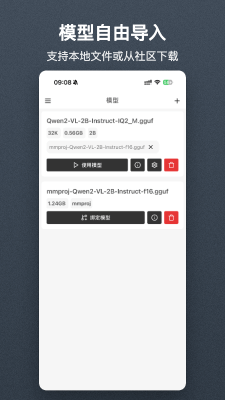

把大模型塞进安卓手机——Local AI 从零上手完整教程
Local AI 让 GGUF 模型在安卓端本地跑通，图文对话、飞行模式下隐私无忧，本文手把手带你从零部署到进阶调优。
读完这篇教程，你将能够在自己的安卓手机上安装 Local AI、下载第一个 GGUF 模型、完成一次离线图文对话，并根据手机内存情况微调参数让推理速度最大化。
准备：确认你的设备能跑起来
Local AI 是安卓端的本地大模型推理应用，核心依赖是 llama.cpp 的安卓适配版。动手之前先确认两件事：
- 安卓版本：Android 8.0 及以上都能装，但 Android 12 及以上才能完整利用硬件加速，推理速度差一个量级
- 内存：这是硬门槛——纯文本 3B 模型建议至少 6 GB RAM，7B 模型要 12 GB 起步；带视觉能力的模型额外需要 2 GB 内存空间
别纠结芯片型号，骁龙、天玑、Exynos 都能跑，Local AI 会自动检测并启用设备支持的计算后端。

第一步：安装应用并完成首次启动
先把 Local AI 装到手机上。安装包从官方下载拿，装完打开应用时需要授予两个权限——存储访问（用来加载 GGUF 模型文件）和网络权限（用来从魔搭社区下载模型）。
首次启动界面会引导你进入模型管理器，这是整个应用的中枢。你会看到三个选项：从社区下载、从本地文件导入、暂不下载。先选社区下载最简单——点进去就能看到热门推荐列表，每个模型旁边标注了参数量、内存占用和架构类型。
第二步：选对第一个模型
新手最容易犯的错：看到热门榜就下 7B 大模型，结果加载半天跑不动。建议从 2B 或 3B 起步，体验流程走通了再考虑升级。
下载时有个关键点要看清楚模型名——如果模型名里带 VL / VLM / LLaVA 这几个关键词，说明它是视觉语言模型，支持多模态识图；没有这些标识的就是纯文本模型。Local AI 的多模态功能只有装了 VL 架构的 GGUF 才能用，两者不通用。
推荐第一个模型选 Qwen2.5-3B（纯文本，中文能力够强，内存友好）或者 Qwen2-VL-2B（带视觉，能识图）。选好后点下载，等待进度条走完——模型文件通常 1~4 GB，Wi-Fi 下几分钟能下完。
下载完成后模型会自动标记为「就绪」，主界面会多出一个对话入口。

第三步：开始第一次对话
回到主界面，点那个绿底的对话按钮进入聊天页。输入框里敲一句「你好，介绍一下你自己」，点发送。
这时候你能感受到 Local AI 和云端 AI 的本质区别——没有网络请求的等待感。每一个 token 的生成都发生在手机 SoC 的计算单元上，速度取决于你的芯片和模型大小：
- 骁龙 8 Gen 3 + 2B 模型：大约 25~35 token/s
- 骁龙 7 系 + 3B 模型：大约 10~20 token/s
- 老机型 + 7B 模型：可能只有 5 token/s 甚至更低
对话过程中可以随时长按模型回复来复制、重新生成或者让它换一种说法。左上角的返回键可以新建对话线程，Local AI 会用本地 SQLite 数据库保存历史记录。
第四步：启用多模态识图
如果你装的是 VL 架构模型，对话页输入框旁边会出现一个图片按钮（📷 图标）。点击它可以从相册选照片或者直接拍照。
图片会显示在输入区上方，然后在下方输入文字 prompt。试试这几个实用场景：
- 查票据：拍一张购物小票，让模型帮你提取商店名称、总价和日期
- 识物体：逛街看到不认识的花或菜，拍一张让模型介绍一下
- 读截图：朋友发来的 App 界面截图，让模型找出可点击的按钮并描述位置

图片送进去之后，模型会在手机本地完成视觉分析和文字生成——全程没有任何上传。敏感图片（医疗报告、合同扫描件、聊天记录截图）开飞行模式再发，信息连离开手机的机会都没有。这一点是云端识图工具完全做不到的。
第五步：精细调优——让你的手机跑得更快更稳
Local AI 有个 GGUF 精细设置页，里面的参数来自 llama.cpp 社区。完整参数对照表可以翻 Local AI文档 对照参考。99% 的情况保持默认就好，但遇到特定问题时可以针对性调整：
批次大小（Batch） 控制模型每次处理多少个 token 再推进到下一步。盲目调大可能让内存瞬间不够用反而崩溃——手机特别卡、长对话经常中途挂掉时试试调小（从 512 降到 256），每次处理更少的 token，内存峰值更低。旗舰机 16 GB 内存 + 骁龙 8 Gen 3 级别可以尝试调大到 1024，能获得 5~15% 的速度提升。
上下文长度 滑块最高到 32768，这是模型架构层面的硬限制。小模型（1~3B）开到 8192 或 16384 就够用了，大模型（7B）可以开到 32768 但会增加内存占用。别调到超过模型实际支持的上限——会直接加载失败。
改参数时一次只改一个，改完重启模型再观察效果。同时改一堆参数出了问题你根本不知道是哪个导致的。
新手最容易翻车的三个地方
一是模型架构选错。纯文本模型装再多也没法用多模态功能，必须确认模型名里有 VL / VLM / LLaVA 这些标识。
二是内存不够还硬上 7B。加载 7B 模型时应用闪退或反复重启，多半是 RAM 不够。关掉其他后台应用再试一次，不行就换回 3B。
三是调参数太贪。第一次上手就把 Batch 调到 2048、上下文拉满 32768，结果模型加载失败甚至应用崩溃。保持默认值起步，出了问题再微调其中一两个参数。
进阶一句话
当你对基础对话和识图已经熟练之后，可以试着关掉 Local AI 的网络权限开飞行模式使用——下载好的模型在离线状态下所有功能都能正常工作，这时候你才能真正体会到本地 AI 和云端 AI 的本质差别。
关于 Local AI 的完整安装指南、模型选择参考、参数调优手册以及常见问题排查，三个同步维护的仓库里都能找到详细资料——GitHub 主仓库最及时，Gitee 在国内访问速度更快，GitCode 作为备份镜像保证任意网络环境都能拉到。